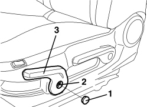
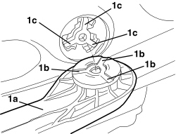

7045A33 CONTROL LEVER FOR DEVICE TO ADJUST FRONT SEAT SWINGING - RR
- Path
- Procedures > 70 FITTINGS > 7045 FRONT SEATS > 7045A FRONT SEAT ASSEMBLY > 7045A33 CONTROL LEVER FOR DEVICE TO ADJUST FRONT SEAT SWINGING - RR
- Kind
- repair procedure (removal / refitting; the operation number is the code)
- Applies to
- all engines; all production periods
- Interactive page
- https://sloeber94.github.io/elrnDB-aBrrSpdr/en/#/946004137
Applies to: all engines; all production periods
 Removing
Removing
 Refitting
Refitting- Raise the seat until it is in the end of travel position.
1. Remove the cover, releasing the internal retainers.
2. Undo the bolt.
3. Remove the lever.

Applies to: all engines; all production periods
Refitting
Removing- Check that the lever is not damaged.
1. Position the lever (1a) in its seat by aligning the splining (1b) with the rocker mechanism seats (1c).

Applies to: all engines; all production periods
- Tighten the lever retaining bolt.
- Refit the cover and attach the retainers.
- Place the seat in the correct position.
Topics that link to this page (12)
- 7045A18 FRONT SEAT BACKREST ASSEMBLY (ONE), LEFT OR RIGHT - R.R.
- 7045A36 DRIVER'S SEAT MANUAL HEIGHT ADJUSTMENT DEVICE - R.R
- 7045A43 FRONT SEAT EXTERIOR GUARD (ONE), LEFT OR RIGHT - R.R
- 7045A55 MANUAL DEVICE TO ADJUST FRONT SEAT ANGLE - R.R.
- 7045A86 FRONT SEAT FRAME (ONE), LEFT OR RIGHT, R.R.
- 7045D18 FRONT SEAT CUSHION SPRINGING (ONE), LH OR RH - R R
- 7045D20 FRONT SEAT CUSHION COVER, LEFT OR RIGHT - R.R.
- 7045D21 FRONT SEAT CUSHION COVER, LEFT OR RIGHT - R.R. WITH SEAT REMOVED
- 7045J55 FLEXIBLE SHAFT FROM MOTOR TO REDUCTION MECHANISM FOR FRONT SEAT BACKREST TILTING (ONE), LEFT OR RIGHT - R.R.
- 7045J56 REDUCTION MECHANISM FOR FRONT SEAT BACKREST ANGLE MOTOR (ONE), LEFT OR RIGHT - R.R.
- 7045J60 FRONT SEAT BACKREST ANGLE CONTROL SWITCH (ONE), LEFT OR RIGHT - R.R.
- 7065A34 PASSENGER PRESENCE SENSOR ON FRONT SEAT FOR INDICATING SEATBELT UNFASTENED R R